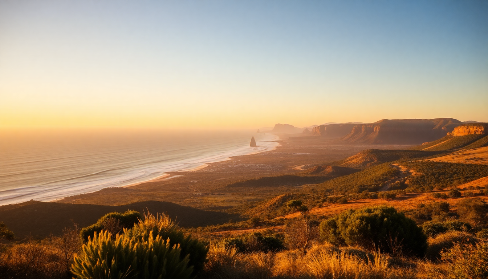

10-Day Australia Itinerary: Sydney, Great Ocean Road & Uluru

We landed in Sydney on a Tuesday morning and had ten days to hit three very different parts of Australia: the harbour city, the coastal drive out of Melbourne, and the red centre. It’s a tight schedule, but it’s doable if you’re willing to take a couple of early flights and skip the filler. Here’s exactly how we did it, including what we’d repeat and what we’d skip.
Is 10 days enough for Sydney, the Great Ocean Road, and Uluru?
It’s tight, but yes — if you’re efficient. The biggest time sink is the domestic flight from Melbourne to Uluru (Ayers Rock Airport). That leg takes about three hours, plus airport time. We planned it as a morning flight so we landed at Uluru by lunch and had the afternoon free.
We allocated four days to Sydney, two days to the Great Ocean Road (driving from Melbourne), and two full days at Uluru. The final day was a buffer for the long flight home from Sydney. It worked, but we didn’t waste a single morning sleeping in.
What’s the best way to see Sydney in 4 days?
We stayed in Potts Point at the The Kirketon Hotel — quieter than the CBD, a 10-minute walk to the Royal Botanic Garden, and close to the Kings Cross train station. That location meant we could walk to the Sydney Opera House in 20 minutes without fighting crowds.
- Day 1: Walk the Bondi to Coogee coastal walk (2 hours, easy). Grab fish and chips at The Bucket List in Bondi. Afternoon ferry from Circular Quay to Manly — sit on the right side for the Opera House view.
- Day 2: Early morning at the Opera House forecourt before the tour groups arrive. Then the BridgeClimb (we did the Summit climb at 9am — worth the price). Lunch at The Grounds of Alexandria in an old pie factory.
- Day 3: Taronga Zoo via the ferry from Circular Quay. We skipped the Sydney Tower Eye — the view from the Blue Mountains is better and less crowded. Afternoon walk through The Rocks markets.
- Day 4: Day trip to the Blue Mountains. We took the train from Central to Katoomba (2 hours). The Three Sisters lookout is crowded, but the Grand Canyon Walk (1.5 hours) is quiet and stunning. Skip the Scenic World cable car — it’s overpriced and the queue eats an hour.
How do you drive the Great Ocean Road from Melbourne in 2 days?
We flew from Sydney to Melbourne (1.5 hours, Jetstar), picked up a rental car at the airport, and drove straight to Torquay — the start of the road. The full drive to Port Campbell is about 3.5 hours without stops, but you’ll want to stop.
- Day 1: Drive from Melbourne to Lorne (1.5 hours). Stop at Bells Beach for the surf view. Lunch at The Bottle of Milk in Lorne — the fried chicken burger is solid. Continue to Apollo Bay for the night. We stayed at Seafarers Getaway — small cabins overlooking the ocean.
- Day 2: Early start to see the Twelve Apostles at sunrise. Then Loch Ard Gorge, Gibson Steps, and London Bridge. By 11am the tour buses arrive, so go early. Drive back to Melbourne via the inland route (A1, 3 hours) to save time. Drop the car at the airport and catch the evening flight to Uluru.
Pro tip: The road from Port Campbell back to Melbourne via the A1 is boring but fast. Don’t try to drive the full coastal road both ways — you’ll waste a day.
Is Uluru worth the flight and the heat?
Yes, but only if you respect the place. We flew from Melbourne to Ayers Rock Airport (Yulara) and stayed at Desert Gardens Hotel inside the resort. The resort is the only accommodation within the national park — you can’t stay closer. We booked a Uluru Sunset Tour with a local guide (small group, 12 people) because the ranger talks add context you don’t get on your own.
- Day 1: Arrive by noon. Check in, then head to the Uluru-Kata Tjuta National Park. Walk the Mala Walk at the base of Uluru (2 km, flat). Sunset at the Talinguru Nyakunytjaku viewing area — the colour shift from orange to deep red is real.
- Day 2: Sunrise at Kata Tjuta (the domes). Hike the Valley of the Winds walk (7 km, moderate) — it’s the best hike in the park. Afternoon at the Cultural Centre for the free exhibits. Avoid the rock climb — it’s closed permanently and was always disrespectful.
The heat in summer (December-February) can hit 40°C. We went in April and it was 28°C — perfect. If you go in summer, start all walks before 7am.
What should you skip on this itinerary?
A few things we regretted or that friends warned us about:
- Sydney Tower Eye: $30 for a view you get for free from the Mrs Macquarie’s Chair lookout.
- The Great Ocean Road in one day: You’ll spend 8 hours driving and see the Twelve Apostles for 15 minutes. Stay overnight.
- Uluru Field of Light: It’s a paid art installation outside the park. Pretty, but not worth $50 per person when the real rock is free.
- Melbourne city itself: If you only have 10 days, skip Melbourne. The Great Ocean Road is the draw. We spent zero time in the city beyond the airport.
FAQ
Can you do this trip without renting a car? Yes for Sydney and Uluru (Ubers and tour shuttles work fine), but the Great Ocean Road is much better with a rental. The tour buses stop at the main viewpoints but skip the smaller coves and towns. We used Hertz at Melbourne Airport and it was straightforward.
What’s the best time of year for this route? April to May or September to October. Sydney and the Great Ocean Road are mild, and Uluru isn’t scorching. Avoid December-February for Uluru (too hot) and June-August for the Great Ocean Road (cold and foggy).
Do you need a visa for Australia? Yes, most visitors need an eVisitor (subclass 651) or ETA (subclass 601). Apply online — it takes 20 minutes and costs about $20 AUD. We got ours approved in two hours.
Conclusion
- Stay in Potts Point or The Rocks in Sydney, not Darling Harbour.
- Drive the Great Ocean Road over two days and stay in Apollo Bay.
- Fly into Uluru directly from Melbourne — don’t go through Alice Springs.
- Start every walk before 8am to beat the heat and crowds.
- Skip the Field of Light and Scenic World — they’re tourist traps.